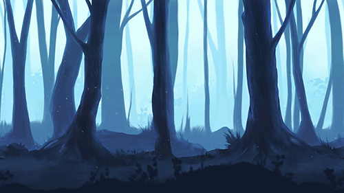
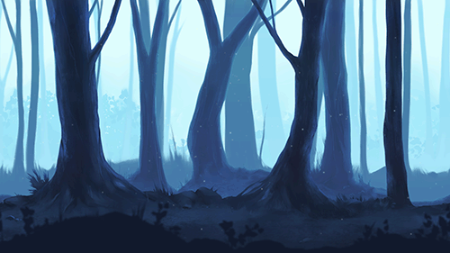
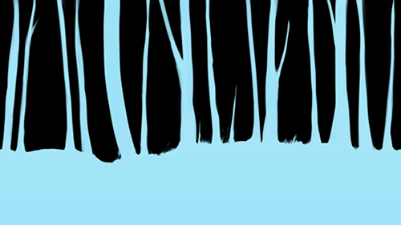
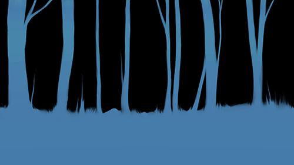
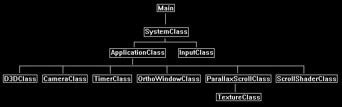

Parallax Scrolling is a technique that uses 2D scrolling images with transparency to create an interesting 3D depth effect.
It is also commonly combined with 3D rendering to achieve a number of different graphical styles, or sometimes just optimizations.
For example, the two following images are the same scene with 10 layers of parallax scrolling rendered at different points in time:


Each layer will generally move at a different speed than the other layers to create a movement effect that gives the illusion of 3D depth.
With the use of transparency each layer will have see through portions to see the layers behind it which provides that 3D depth appearance.
For this tutorial we will start with just four layers.
Layer 1:
Layer 2:
Layer 3:

Layer 4:

And the combined effect should look like the following:
Note that if you are using photoshop and a different file format such as PNG, you will need to convert the PNG to a 32-bit targa format.
So, you can copy the PNG color layer as normal to the RGB channel of the targa.
But to copy the transparency layer of the PNG in photoshop you need use the menu bar and select "Layer", then "Layer Mask", and then "From Transparency".
Then you can copy that transparency layer to the alpha channel of your targa image.
Note that the transparency layer of the PNG can have different dimensions also, so you will need to align it correctly when you paste it to the alpha layer.
We will also use a configuration file to define the layers of parallax scrolling.
For this tutorial it will have just the texture filename and the speed at which that texture will scroll at.
Note that each layer of parallax defined must be ordered from back to front, since that is order we will be rendering them.
We will call the file config.txt and it will look like the following:
config.txt
Count: 4
../Engine/data/layer_10_sky.tga 0.00
../Engine/data/layer_09_forest.tga 0.02
../Engine/data/layer_08_forest.tga 0.04
../Engine/data/layer_07_forest.tga 0.06
The config.txt file can be expanded to add other things such as translation location start, opacity, and so forth.
But like usual we will start with just the basics.
Framework
Since this is a 2D effect we will just use 2D rendering by using the OrthoWindowClass.
We will use a custom shader called ScrollShaderClass so that it can be expanded in the future for additional capabilities, but at the start will just translate 2D images across the screen.
We will also add a class called ParallaxScrollClass which will encapsulate the parallax scrolling data into a single class that takes the config.txt as input to build it.

Scroll.vs
The scroll.vs and scroll.ps shaders are just copies of the translate.vs and translate.ps shaders from tutorial 28: Texture Translation.
For this tutorial all we will be doing is translating the textures to create the scroll effect, so the translate shader code is all we need.
We will only make one change in the pixel shader to move the textures right instead of left.
Now the reason I created a separate shader called translate.vs and translate.ps is because in the future this effect needs to be expanded to do other things such as take opacity as an input.
So having its own shader makes more sense for future expansion reasons.
////////////////////////////////////////////////////////////////////////////////
// Filename: scroll.vs
////////////////////////////////////////////////////////////////////////////////
/////////////
// GLOBALS //
/////////////
cbuffer MatrixBuffer
{
matrix worldMatrix;
matrix viewMatrix;
matrix projectionMatrix;
};
//////////////
// TYPEDEFS //
//////////////
struct VertexInputType
{
float4 position : POSITION;
float2 tex : TEXCOORD0;
};
struct PixelInputType
{
float4 position : SV_POSITION;
float2 tex : TEXCOORD0;
};
////////////////////////////////////////////////////////////////////////////////
// Vertex Shader
////////////////////////////////////////////////////////////////////////////////
PixelInputType ScrollVertexShader(VertexInputType input)
{
PixelInputType output;
// Change the position vector to be 4 units for proper matrix calculations.
input.position.w = 1.0f;
// Calculate the position of the vertex against the world, view, and projection matrices.
output.position = mul(input.position, worldMatrix);
output.position = mul(output.position, viewMatrix);
output.position = mul(output.position, projectionMatrix);
// Store the texture coordinates for the pixel shader.
output.tex = input.tex;
return output;
}
Scroll.ps
////////////////////////////////////////////////////////////////////////////////
// Filename: scroll.ps
////////////////////////////////////////////////////////////////////////////////
/////////////
// GLOBALS //
/////////////
Texture2D shaderTexture : register(t0);
SamplerState SampleType : register(s0);
cbuffer TranslationBuffer
{
float textureTranslation;
};
//////////////
// TYPEDEFS //
//////////////
struct PixelInputType
{
float4 position : SV_POSITION;
float2 tex : TEXCOORD0;
};
////////////////////////////////////////////////////////////////////////////////
// Pixel Shader
////////////////////////////////////////////////////////////////////////////////
float4 ScrollPixelShader(PixelInputType input) : SV_TARGET
{
float4 textureColor;
This is the only difference from the original translate shader.
We will move the texture to the right by subtracting the translation value instead of adding it.
// Translate the position where we sample the pixel from.
input.tex.x -= textureTranslation;
// Sample the pixel color from the texture using the sampler at this texture coordinate location.
textureColor = shaderTexture.SampleLevel(SampleType, input.tex, 0);
return textureColor;
}
Scrollshaderclass.h
The scroll shader class is exactly the same as the translate shader class but with name changes.
////////////////////////////////////////////////////////////////////////////////
// Filename: scrollshaderclass.h
////////////////////////////////////////////////////////////////////////////////
#ifndef _SCROLLSHADERCLASS_H_
#define _SCROLLSHADERCLASS_H_
//////////////
// INCLUDES //
//////////////
#include <d3d11.h>
#include <d3dcompiler.h>
#include <directxmath.h>
#include <fstream>
using namespace DirectX;
using namespace std;
////////////////////////////////////////////////////////////////////////////////
// Class name: ScrollShaderClass
////////////////////////////////////////////////////////////////////////////////
class ScrollShaderClass
{
private:
struct MatrixBufferType
{
XMMATRIX world;
XMMATRIX view;
XMMATRIX projection;
};
struct TranslateBufferType
{
float translation;
XMFLOAT3 padding;
};
public:
ScrollShaderClass();
ScrollShaderClass(const ScrollShaderClass&);
~ScrollShaderClass();
bool Initialize(ID3D11Device*, HWND);
void Shutdown();
bool Render(ID3D11DeviceContext*, int, XMMATRIX, XMMATRIX, XMMATRIX, ID3D11ShaderResourceView*, float);
private:
bool InitializeShader(ID3D11Device*, HWND, WCHAR*, WCHAR*);
void ShutdownShader();
void OutputShaderErrorMessage(ID3D10Blob*, HWND, WCHAR*);
bool SetShaderParameters(ID3D11DeviceContext*, XMMATRIX, XMMATRIX, XMMATRIX, ID3D11ShaderResourceView*, float);
void RenderShader(ID3D11DeviceContext*, int);
private:
ID3D11VertexShader* m_vertexShader;
ID3D11PixelShader* m_pixelShader;
ID3D11InputLayout* m_layout;
ID3D11Buffer* m_matrixBuffer;
ID3D11SamplerState* m_sampleState;
ID3D11Buffer* m_translateBuffer;
};
#endif
Scrollshaderclass.cpp
////////////////////////////////////////////////////////////////////////////////
// Filename: scrollshaderclass.cpp
////////////////////////////////////////////////////////////////////////////////
#include "scrollshaderclass.h"
ScrollShaderClass::ScrollShaderClass()
{
m_vertexShader = 0;
m_pixelShader = 0;
m_layout = 0;
m_matrixBuffer = 0;
m_sampleState = 0;
m_translateBuffer = 0;
}
ScrollShaderClass::ScrollShaderClass(const ScrollShaderClass& other)
{
}
ScrollShaderClass::~ScrollShaderClass()
{
}
bool ScrollShaderClass::Initialize(ID3D11Device* device, HWND hwnd)
{
wchar_t vsFilename[128], psFilename[128];
int error;
bool result;
// Set the filename of the vertex shader.
error = wcscpy_s(vsFilename, 128, L"../Engine/scroll.vs");
if(error != 0)
{
return false;
}
// Set the filename of the pixel shader.
error = wcscpy_s(psFilename, 128, L"../Engine/scroll.ps");
if(error != 0)
{
return false;
}
// Initialize the vertex and pixel shaders.
result = InitializeShader(device, hwnd, vsFilename, psFilename);
if(!result)
{
return false;
}
return true;
}
void ScrollShaderClass::Shutdown()
{
// Shutdown the vertex and pixel shaders as well as the related objects.
ShutdownShader();
return;
}
bool ScrollShaderClass::Render(ID3D11DeviceContext* deviceContext, int indexCount, XMMATRIX worldMatrix, XMMATRIX viewMatrix,
XMMATRIX projectionMatrix, ID3D11ShaderResourceView* texture, float translation)
{
bool result;
// Set the shader parameters that it will use for rendering.
result = SetShaderParameters(deviceContext, worldMatrix, viewMatrix, projectionMatrix, texture, translation);
if(!result)
{
return false;
}
// Now render the prepared buffers with the shader.
RenderShader(deviceContext, indexCount);
return true;
}
bool ScrollShaderClass::InitializeShader(ID3D11Device* device, HWND hwnd, WCHAR* vsFilename, WCHAR* psFilename)
{
HRESULT result;
ID3D10Blob* errorMessage;
ID3D10Blob* vertexShaderBuffer;
ID3D10Blob* pixelShaderBuffer;
D3D11_INPUT_ELEMENT_DESC polygonLayout[2];
unsigned int numElements;
D3D11_BUFFER_DESC matrixBufferDesc;
D3D11_SAMPLER_DESC samplerDesc;
D3D11_BUFFER_DESC translateBufferDesc;
// Initialize the pointers this function will use to null.
errorMessage = 0;
vertexShaderBuffer = 0;
pixelShaderBuffer = 0;
// Compile the vertex shader code.
result = D3DCompileFromFile(vsFilename, NULL, NULL, "ScrollVertexShader", "vs_5_0", D3D10_SHADER_ENABLE_STRICTNESS, 0,
&vertexShaderBuffer, &errorMessage);
if(FAILED(result))
{
// If the shader failed to compile it should have writen something to the error message.
if(errorMessage)
{
OutputShaderErrorMessage(errorMessage, hwnd, vsFilename);
}
// If there was nothing in the error message then it simply could not find the shader file itself.
else
{
MessageBox(hwnd, vsFilename, L"Missing Shader File", MB_OK);
}
return false;
}
// Compile the pixel shader code.
result = D3DCompileFromFile(psFilename, NULL, NULL, "ScrollPixelShader", "ps_5_0", D3D10_SHADER_ENABLE_STRICTNESS, 0,
&pixelShaderBuffer, &errorMessage);
if(FAILED(result))
{
// If the shader failed to compile it should have writen something to the error message.
if(errorMessage)
{
OutputShaderErrorMessage(errorMessage, hwnd, psFilename);
}
// If there was nothing in the error message then it simply could not find the file itself.
else
{
MessageBox(hwnd, psFilename, L"Missing Shader File", MB_OK);
}
return false;
}
// Create the vertex shader from the buffer.
result = device->CreateVertexShader(vertexShaderBuffer->GetBufferPointer(), vertexShaderBuffer->GetBufferSize(), NULL, &m_vertexShader);
if(FAILED(result))
{
return false;
}
// Create the pixel shader from the buffer.
result = device->CreatePixelShader(pixelShaderBuffer->GetBufferPointer(), pixelShaderBuffer->GetBufferSize(), NULL, &m_pixelShader);
if(FAILED(result))
{
return false;
}
// Create the vertex input layout description.
polygonLayout[0].SemanticName = "POSITION";
polygonLayout[0].SemanticIndex = 0;
polygonLayout[0].Format = DXGI_FORMAT_R32G32B32_FLOAT;
polygonLayout[0].InputSlot = 0;
polygonLayout[0].AlignedByteOffset = 0;
polygonLayout[0].InputSlotClass = D3D11_INPUT_PER_VERTEX_DATA;
polygonLayout[0].InstanceDataStepRate = 0;
polygonLayout[1].SemanticName = "TEXCOORD";
polygonLayout[1].SemanticIndex = 0;
polygonLayout[1].Format = DXGI_FORMAT_R32G32_FLOAT;
polygonLayout[1].InputSlot = 0;
polygonLayout[1].AlignedByteOffset = D3D11_APPEND_ALIGNED_ELEMENT;
polygonLayout[1].InputSlotClass = D3D11_INPUT_PER_VERTEX_DATA;
polygonLayout[1].InstanceDataStepRate = 0;
// Get a count of the elements in the layout.
numElements = sizeof(polygonLayout) / sizeof(polygonLayout[0]);
// Create the vertex input layout.
result = device->CreateInputLayout(polygonLayout, numElements, vertexShaderBuffer->GetBufferPointer(),
vertexShaderBuffer->GetBufferSize(), &m_layout);
if(FAILED(result))
{
return false;
}
// Release the vertex shader buffer and pixel shader buffer since they are no longer needed.
vertexShaderBuffer->Release();
vertexShaderBuffer = 0;
pixelShaderBuffer->Release();
pixelShaderBuffer = 0;
// Setup the description of the dynamic matrix constant buffer that is in the vertex shader.
matrixBufferDesc.Usage = D3D11_USAGE_DYNAMIC;
matrixBufferDesc.ByteWidth = sizeof(MatrixBufferType);
matrixBufferDesc.BindFlags = D3D11_BIND_CONSTANT_BUFFER;
matrixBufferDesc.CPUAccessFlags = D3D11_CPU_ACCESS_WRITE;
matrixBufferDesc.MiscFlags = 0;
matrixBufferDesc.StructureByteStride = 0;
// Create the constant buffer pointer so we can access the vertex shader constant buffer from within this class.
result = device->CreateBuffer(&matrixBufferDesc, NULL, &m_matrixBuffer);
if(FAILED(result))
{
return false;
}
// Create a texture sampler state description.
samplerDesc.Filter = D3D11_FILTER_MIN_MAG_MIP_LINEAR;
samplerDesc.AddressU = D3D11_TEXTURE_ADDRESS_WRAP;
samplerDesc.AddressV = D3D11_TEXTURE_ADDRESS_WRAP;
samplerDesc.AddressW = D3D11_TEXTURE_ADDRESS_WRAP;
samplerDesc.MipLODBias = 0.0f;
samplerDesc.MaxAnisotropy = 1;
samplerDesc.ComparisonFunc = D3D11_COMPARISON_ALWAYS;
samplerDesc.BorderColor[0] = 0;
samplerDesc.BorderColor[1] = 0;
samplerDesc.BorderColor[2] = 0;
samplerDesc.BorderColor[3] = 0;
samplerDesc.MinLOD = 0;
samplerDesc.MaxLOD = D3D11_FLOAT32_MAX;
// Create the texture sampler state.
result = device->CreateSamplerState(&samplerDesc, &m_sampleState);
if(FAILED(result))
{
return false;
}
// Setup the description of the texture translation dynamic constant buffer that is in the pixel shader.
translateBufferDesc.Usage = D3D11_USAGE_DYNAMIC;
translateBufferDesc.ByteWidth = sizeof(TranslateBufferType);
translateBufferDesc.BindFlags = D3D11_BIND_CONSTANT_BUFFER;
translateBufferDesc.CPUAccessFlags = D3D11_CPU_ACCESS_WRITE;
translateBufferDesc.MiscFlags = 0;
translateBufferDesc.StructureByteStride = 0;
// Create the constant buffer pointer so we can access the pixel shader constant buffer from within this class.
result = device->CreateBuffer(&translateBufferDesc, NULL, &m_translateBuffer);
if(FAILED(result))
{
return false;
}
return true;
}
void ScrollShaderClass::ShutdownShader()
{
// Release the texture translation constant buffer.
if(m_translateBuffer)
{
m_translateBuffer->Release();
m_translateBuffer = 0;
}
// Release the sampler state.
if(m_sampleState)
{
m_sampleState->Release();
m_sampleState = 0;
}
// Release the matrix constant buffer.
if(m_matrixBuffer)
{
m_matrixBuffer->Release();
m_matrixBuffer = 0;
}
// Release the layout.
if(m_layout)
{
m_layout->Release();
m_layout = 0;
}
// Release the pixel shader.
if(m_pixelShader)
{
m_pixelShader->Release();
m_pixelShader = 0;
}
// Release the vertex shader.
if(m_vertexShader)
{
m_vertexShader->Release();
m_vertexShader = 0;
}
return;
}
void ScrollShaderClass::OutputShaderErrorMessage(ID3D10Blob* errorMessage, HWND hwnd, WCHAR* shaderFilename)
{
char* compileErrors;
unsigned long long bufferSize, i;
ofstream fout;
// Get a pointer to the error message text buffer.
compileErrors = (char*)(errorMessage->GetBufferPointer());
// Get the length of the message.
bufferSize = errorMessage->GetBufferSize();
// Open a file to write the error message to.
fout.open("shader-error.txt");
// Write out the error message.
for(i=0; i<bufferSize; i++)
{
fout << compileErrors[i];
}
// Close the file.
fout.close();
// Release the error message.
errorMessage->Release();
errorMessage = 0;
// Pop a message up on the screen to notify the user to check the text file for compile errors.
MessageBox(hwnd, L"Error compiling shader. Check shader-error.txt for message.", shaderFilename, MB_OK);
return;
}
bool ScrollShaderClass::SetShaderParameters(ID3D11DeviceContext* deviceContext, XMMATRIX worldMatrix, XMMATRIX viewMatrix,
XMMATRIX projectionMatrix, ID3D11ShaderResourceView* texture, float translation)
{
HRESULT result;
D3D11_MAPPED_SUBRESOURCE mappedResource;
MatrixBufferType* dataPtr;
unsigned int bufferNumber;
TranslateBufferType* dataPtr2;
// Transpose the matrices to prepare them for the shader.
worldMatrix = XMMatrixTranspose(worldMatrix);
viewMatrix = XMMatrixTranspose(viewMatrix);
projectionMatrix = XMMatrixTranspose(projectionMatrix);
// Lock the constant buffer so it can be written to.
result = deviceContext->Map(m_matrixBuffer, 0, D3D11_MAP_WRITE_DISCARD, 0, &mappedResource);
if(FAILED(result))
{
return false;
}
// Get a pointer to the data in the constant buffer.
dataPtr = (MatrixBufferType*)mappedResource.pData;
// Copy the matrices into the constant buffer.
dataPtr->world = worldMatrix;
dataPtr->view = viewMatrix;
dataPtr->projection = projectionMatrix;
// Unlock the constant buffer.
deviceContext->Unmap(m_matrixBuffer, 0);
// Set the position of the constant buffer in the vertex shader.
bufferNumber = 0;
// Finally set the constant buffer in the vertex shader with the updated values.
deviceContext->VSSetConstantBuffers(bufferNumber, 1, &m_matrixBuffer);
// Set shader texture resource in the pixel shader.
deviceContext->PSSetShaderResources(0, 1, &texture);
// Lock the texture translation constant buffer so it can be written to.
result = deviceContext->Map(m_translateBuffer, 0, D3D11_MAP_WRITE_DISCARD, 0, &mappedResource);
if(FAILED(result))
{
return false;
}
// Get a pointer to the data in the texture translation constant buffer.
dataPtr2 = (TranslateBufferType*)mappedResource.pData;
// Copy the translation value into the texture translation constant buffer.
dataPtr2->translation = translation;
// Unlock the buffer.
deviceContext->Unmap(m_translateBuffer, 0);
// Set the position of the texture translation constant buffer in the pixel shader.
bufferNumber = 0;
// Now set the texture translation constant buffer in the pixel shader with the updated values.
deviceContext->PSSetConstantBuffers(bufferNumber, 1, &m_translateBuffer);
return true;
}
void ScrollShaderClass::RenderShader(ID3D11DeviceContext* deviceContext, int indexCount)
{
// Set the vertex input layout.
deviceContext->IASetInputLayout(m_layout);
// Set the vertex and pixel shaders that will be used to render the geometry.
deviceContext->VSSetShader(m_vertexShader, NULL, 0);
deviceContext->PSSetShader(m_pixelShader, NULL, 0);
// Set the sampler state in the pixel shader.
deviceContext->PSSetSamplers(0, 1, &m_sampleState);
// Render the geometry.
deviceContext->DrawIndexed(indexCount, 0, 0);
return;
}
Parallaxscrollclass.h
The ParallaxScrollClass is used for encapsulating the parallax rendering data into a single class.
It will use the config.txt file and build all the data we need for rendering a parallax scene.
////////////////////////////////////////////////////////////////////////////////
// Filename: parallaxscrollclass.h
////////////////////////////////////////////////////////////////////////////////
#ifndef _PARALLAXSCROLLCLASS_H_
#define _PARALLAXSCROLLCLASS_H_
//////////////
// INCLUDES //
//////////////
#include <fstream>
using namespace std;
///////////////////////
// MY CLASS INCLUDES //
///////////////////////
#include "textureclass.h"
////////////////////////////////////////////////////////////////////////////////
// Class name: ParallaxScrollClass
////////////////////////////////////////////////////////////////////////////////
class ParallaxScrollClass
{
private:
The ParallaxArrayType struct will define the data for each layer of parallax scrolling we have.
For now, we record the speed that layer moves at, and its current location for its scroll.
If we want to expand this effect then we will need to add further variables to this struct.
struct ParallaxArrayType
{
float scrollSpeed;
float textureTranslation;
};
public:
ParallaxScrollClass();
ParallaxScrollClass(const ParallaxScrollClass&);
~ParallaxScrollClass();
The class has the expected Initialize and Shutdown functions.
The Frame function will need to be called each frame to update the translated location of each layer for each frame, as well as any additional effects that might be added later on.
bool Initialize(ID3D11Device*, ID3D11DeviceContext*, char*);
void Shutdown();
void Frame(float);
The following are the helper functions to return data needed for rendering the parallax class object.
int GetTextureCount();
ID3D11ShaderResourceView* GetTexture(int);
float GetTranslation(int);
private:
We will require arrays for both the textures for each layer, and also the ParallaxArrayType struct for each layer.
The m_textureCount will represent how many layers there actually are and will define the number of elements in both arrays.
TextureClass* m_TextureArray;
ParallaxArrayType* m_ParallaxArray;
int m_textureCount;
};
#endif
Parallaxscrollclass.cpp
////////////////////////////////////////////////////////////////////////////////
// Filename: parallaxscrollclass.cpp
////////////////////////////////////////////////////////////////////////////////
#include "parallaxscrollclass.h"
ParallaxScrollClass::ParallaxScrollClass()
{
m_TextureArray = 0;
m_ParallaxArray = 0;
}
ParallaxScrollClass::ParallaxScrollClass(const ParallaxScrollClass& other)
{
}
ParallaxScrollClass::~ParallaxScrollClass()
{
}
bool ParallaxScrollClass::Initialize(ID3D11Device* device, ID3D11DeviceContext* deviceContext, char* configFilename)
{
ifstream fin;
char textureFilename[256];
int i, j;
char input;
float scrollSpeed;
bool result;
First open the config.txt file and get the number of parallax layers.
// Open the file.
fin.open(configFilename);
if(!fin.good())
{
return false;
}
// Read the number of textures in the file.
fin.get(input);
while(input != ':')
{
fin.get(input);
}
fin >> m_textureCount;
// Read end of line.
fin.get(input);
// Boundary check.
if((m_textureCount < 1) || (m_textureCount > 64))
{
return false;
}
Now create the two arrays for textures and structs using the texture count as the number of elements (layers) required for each array.
// Create and initialize the texture object array.
m_TextureArray = new TextureClass[m_textureCount];
// Create and initialize the parallax struct array.
m_ParallaxArray = new ParallaxArrayType[m_textureCount];
Now loop through each layer to read the layer data and load it into the texture and struct arrays.
// Loop through each line containing a texture filename and a scroll speed.
for(i=0; i<m_textureCount; i++)
{
j=0;
fin.get(input);
// Read in the texture file name.
while(input != ' ')
{
textureFilename[j] = input;
j++;
fin.get(input);
}
textureFilename[j] = '\0';
// Read in the scroll speed.
fin >> scrollSpeed;
// Read end of line character.
fin.get(input);
// Load the texture into the texture array.
result = m_TextureArray[i].Initialize(device, deviceContext, textureFilename);
if(!result)
{
return false;
}
// Store the scroll speed and initialize the translation of the texture at the start.
m_ParallaxArray[i].scrollSpeed = scrollSpeed;
m_ParallaxArray[i].textureTranslation = 0.0f;
}
// Close the file.
fin.close();
return true;
}
void ParallaxScrollClass::Shutdown()
{
int i;
// Release the parallax struct array.
if(m_ParallaxArray)
{
delete [] m_ParallaxArray;
m_ParallaxArray = 0;
}
// Release the texture object array.
if(m_TextureArray)
{
for(i=0; i<m_textureCount; i++)
{
m_TextureArray[i].Shutdown();
}
delete [] m_TextureArray;
m_TextureArray = 0;
}
return;
}
The Frame function is called each frame to update any time related information.
In the case of this tutorial, we will just be updating the translated position of each layer each frame.
void ParallaxScrollClass::Frame(float frameTime)
{
int i;
// Loop through each of the elements in the parallax struct array.
for(i=0; i<m_textureCount; i++)
{
// Increment the texture translation by the frame time each frame.
m_ParallaxArray[i].textureTranslation += frameTime * m_ParallaxArray[i].scrollSpeed;
if(m_ParallaxArray[i].textureTranslation > 1.0f)
{
m_ParallaxArray[i].textureTranslation -= 1.0f;
}
}
return;
}
These are the helper functions to return data from the two arrays that are needed for rendering.
int ParallaxScrollClass::GetTextureCount()
{
return m_textureCount;
}
ID3D11ShaderResourceView* ParallaxScrollClass::GetTexture(int index)
{
return m_TextureArray[index].GetTexture();
}
float ParallaxScrollClass::GetTranslation(int index)
{
return m_ParallaxArray[index].textureTranslation;
}
Applicationclass.h
////////////////////////////////////////////////////////////////////////////////
// Filename: applicationclass.h
////////////////////////////////////////////////////////////////////////////////
#ifndef _APPLICATIONCLASS_H_
#define _APPLICATIONCLASS_H_
/////////////
// GLOBALS //
/////////////
const bool FULL_SCREEN = true;
const bool VSYNC_ENABLED = true;
const float SCREEN_NEAR = 0.3f;
const float SCREEN_DEPTH = 1000.0f;
///////////////////////
// MY CLASS INCLUDES //
///////////////////////
#include "d3dclass.h"
#include "inputclass.h"
#include "timerclass.h"
#include "cameraclass.h"
#include "orthowindowclass.h"
Include the two new classes here.
#include "parallaxscrollclass.h"
#include "scrollshaderclass.h"
////////////////////////////////////////////////////////////////////////////////
// Class name: ApplicationClass
////////////////////////////////////////////////////////////////////////////////
class ApplicationClass
{
public:
ApplicationClass();
ApplicationClass(const ApplicationClass&);
~ApplicationClass();
bool Initialize(int, int, HWND);
void Shutdown();
bool Frame(InputClass*);
private:
bool Render();
private:
D3DClass* m_Direct3D;
TimerClass* m_Timer;
CameraClass* m_Camera;
The OrthoWindowClass will be used as the 2D model to render each layer of parallax onto.
OrthoWindowClass* m_FullScreenWindow;
Create a class object for the new shader and the parallax scroll class.
ScrollShaderClass* m_ScrollShader;
ParallaxScrollClass* m_ParallaxForest;
};
#endif
Applicationclass.cpp
////////////////////////////////////////////////////////////////////////////////
// Filename: applicationclass.cpp
////////////////////////////////////////////////////////////////////////////////
#include "applicationclass.h"
ApplicationClass::ApplicationClass()
{
m_Direct3D = 0;
m_Timer = 0;
m_Camera = 0;
m_FullScreenWindow = 0;
m_ParallaxForest = 0;
m_ScrollShader = 0;
}
ApplicationClass::ApplicationClass(const ApplicationClass& other)
{
}
ApplicationClass::~ApplicationClass()
{
}
bool ApplicationClass::Initialize(int screenWidth, int screenHeight, HWND hwnd)
{
char configFilename[256];
bool result;
// Create and initialize the Direct3D object.
m_Direct3D = new D3DClass;
result = m_Direct3D->Initialize(screenWidth, screenHeight, VSYNC_ENABLED, hwnd, FULL_SCREEN, SCREEN_DEPTH, SCREEN_NEAR);
if(!result)
{
MessageBox(hwnd, L"Could not initialize Direct3D.", L"Error", MB_OK);
return false;
}
// Create and initialize the timer object.
m_Timer = new TimerClass;
result = m_Timer->Initialize();
if(!result)
{
MessageBox(hwnd, L"Could not initialize the timer object.", L"Error", MB_OK);
return false;
}
// Create and initialize the camera object.
m_Camera = new CameraClass;
m_Camera->SetPosition(0.0f, 0.0f, -10.0f);
m_Camera->Render();
m_Camera->RenderBaseViewMatrix();
// Create and initialize the full screen ortho window object.
m_FullScreenWindow = new OrthoWindowClass;
result = m_FullScreenWindow->Initialize(m_Direct3D->GetDevice(), screenWidth, screenHeight);
if(!result)
{
MessageBox(hwnd, L"Could not initialize the full screen ortho window object.", L"Error", MB_OK);
return false;
}
Create the parallax scroll class object here and use the config.txt file to load it.
// Create and initialize the parallax scroll forest object.
m_ParallaxForest = new ParallaxScrollClass;
// Set the filename of the config file.
strcpy_s(configFilename, "../Engine/data/config.txt");
result = m_ParallaxForest->Initialize(m_Direct3D->GetDevice(), m_Direct3D->GetDeviceContext(), configFilename);
if(!result)
{
MessageBox(hwnd, L"Could not initialize the parallax scroll object.", L"Error", MB_OK);
return false;
}
Create the new scroll shader here.
// Create and initialize the scroll shader object.
m_ScrollShader = new ScrollShaderClass;
result = m_ScrollShader ->Initialize(m_Direct3D->GetDevice(), hwnd);
if(!result)
{
MessageBox(hwnd, L"Could not initialize the scroll shader object.", L"Error", MB_OK);
return false;
}
return true;
}
void ApplicationClass::Shutdown()
{
// Release the scroll shader object.
if(m_ScrollShader)
{
m_ScrollShader->Shutdown();
delete m_ScrollShader;
m_ScrollShader = 0;
}
// Release the parallax scroll forest object.
if(m_ParallaxForest)
{
m_ParallaxForest->Shutdown();
delete m_ParallaxForest;
m_ParallaxForest = 0;
}
// Release the full screen ortho window object.
if(m_FullScreenWindow)
{
m_FullScreenWindow->Shutdown();
delete m_FullScreenWindow;
m_FullScreenWindow = 0;
}
// Release the camera object.
if(m_Camera)
{
delete m_Camera;
m_Camera = 0;
}
// Release the timer object.
if(m_Timer)
{
delete m_Timer;
m_Timer = 0;
}
// Release the Direct3D object.
if(m_Direct3D)
{
m_Direct3D->Shutdown();
delete m_Direct3D;
m_Direct3D = 0;
}
return;
}
bool ApplicationClass::Frame(InputClass* Input)
{
float frameTime;
bool result;
// Check if the escape key has been pressed, if so quit.
if(Input->IsEscapePressed() == true)
{
return false;
}
// Update the system stats.
m_Timer->Frame();
frameTime = m_Timer->GetTime();
Each frame we need to update the parallax scroll object so that the layers all scroll at their respective speeds.
// Do the frame processing for the parallax scroll forest object.
m_ParallaxForest->Frame(frameTime);
// Render the final graphics scene.
result = Render();
if(!result)
{
return false;
}
return true;
}
bool ApplicationClass::Render()
{
XMMATRIX worldMatrix, baseViewMatrix, orthoMatrix;
int textureCount, i;
bool result;
// Clear the buffers to begin the scene.
m_Direct3D->BeginScene(1.0f, 0.0f, 0.0f, 1.0f);
// Get the world, view, and ortho matrices from the camera and d3d objects.
m_Direct3D->GetWorldMatrix(worldMatrix);
m_Camera->GetBaseViewMatrix(baseViewMatrix);
m_Direct3D->GetOrthoMatrix(orthoMatrix);
We need to turn on alpha blending to enable the transparency in each layer of the parallax scroll object.
// Begin 2D rendering and turn off the Z buffer. Also enable alpha blending as the textures have transparency in the alpha channels.
m_Direct3D->TurnZBufferOff();
m_Direct3D->EnableAlphaBlending();
Get the number of textures from the parallax scroll object since this is the same thing as the number of layers that we will need to render.
// Get the number of textures the parallax object uses.
textureCount = m_ParallaxForest->GetTextureCount();
Loop through each layer and render it using the full screen window ortho object and the scroll shader.
// Render each of the parallax scroll textures in order using the scroll shader.
for(i=0; i<textureCount; i++)
{
// Render the full screen ortho window using the scroll shader.
m_FullScreenWindow->Render(m_Direct3D->GetDeviceContext());
result = m_ScrollShader->Render(m_Direct3D->GetDeviceContext(), m_FullScreenWindow->GetIndexCount(), worldMatrix, baseViewMatrix, orthoMatrix,
m_ParallaxForest->GetTexture(i), m_ParallaxForest->GetTranslation(i));
if(!result)
{
return false;
}
}
// Re-enable the Z buffer after 2D rendering complete. Also disable alpha blending.
m_Direct3D->TurnZBufferOn();
m_Direct3D->DisableAlphaBlending();
// Present the rendered scene to the screen.
m_Direct3D->EndScene();
return true;
}
Summary
We can now render parallax scrolling images using a config file to control which textures we use and what speed they move at.
To Do Exercises
1. Compile and run the program to see the four layers of parallax scrolling images. Press escape to quit.
2. Visit digitalmoons itch.io website to download all 10 layers for this forest demo, and get all the layers to work.
3. Try one of the other parallax scrolling backgrounds from digitalmoons itch.io website.
4. Modify the program so that each layer can have an opacity modifier and a starting location for translation.
5. Add a 3D animated layer inside the parallax forest.
Source Code
Source Code and Data Files: dx11win10tut54_src.zip